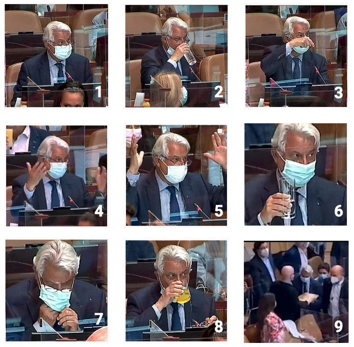
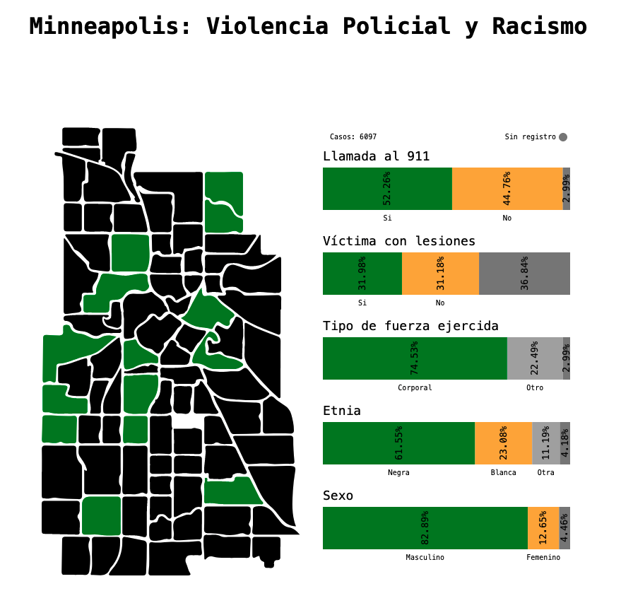

¡Hola 👋! Espera mientras comienza la sesión.
Antes que todo, ¿cómo están?
Visualización de Información
IIC2026 2021-2
Abstracción de tareas
Visualización de Información
IIC2026 2021-2
Contenido
Contenido
1. Abstracción de tareas
2. Acciones en tareas: Analizar
3. Acciones en tareas: Bísqueda y consulta
4. Objetivos en tareas
Abstracción de datos y tareas
- Traer las particularidades del contexto al mismo lenguaje.
- Definir el qué y por qué de la herramienta.
- Seleccionar los aspectos a consideración.
Tareas en visualización
Tarea = acción (verbo) + objetivo (sustantivo) + ...
Acciones
Analizar
Consumir
- Descubrir
- Presentar
- Disfrutar
Producir
- Anotar
- Registrar
- Derivar
Búsqueda
| Elemento ✅ | Elemento ❌ | |
|---|---|---|
| Ubicación ✅ | Ubicar (Lookup) | Sondear (Browse) |
| Ubicación ❌ | Localizar (Locate) | Explorar (Explore) |
Consulta
- Identificar
- Comparar
- Resumir
Objetivos
Todo tipo de dato
- Tendencias
- Partes aisladas
- Características
Atributos
Un atributo
- Valor individual
- Distribución
- Extremos
Varios atributos
- Dependencia
- Correlación
- Similaridad
Redes
- Topología
- Caminos
Espaciales
- Forma
Tareas en visualización
- Presentar la tendencia de precipitaciones de distintas estaciones de medición a lo largo de Chile.
- Sondear estaciones de medición según el valor de atributo individual: ubicación geográfica.
- Comparar la tendencia de precipitaciones a lo largo del tiempo entre dos o más estaciones de medición seleccionadas.
Ejemplo examen

Visualización interactiva creada por ex-estudiante del curso Valeria Riquelme sobre el amor y la felicidad en el mundo.
(Fuente: Sobre el Amor... y su relación con la Felicidad - Salón de la fama InfoVis 2020 )
Ejemplo examen
- Descubrir como distribuye la puntuación de amor a lo largo del mundo.
- Descubrir si existe una correlación entre las puntuaciones de amor (Percent Feeling Love) y felicidad (Happiness Score).
- Identificar extremos en la diferencia de las puntuaciones de amor y felicidad (Dif Love Happ).
- Localizar a un país (valor de nombre) en base a su valor de puntuaciones de amor (Percent Feeling Love) y felicidad (Happiness Score).
- Localizar valor individual de puntuaciones de un país en base a su ubicación.
Caracterización de dominio => Abstracción de tareas
El contexto, y la intencionalidad detrás del problema de visualización, son la base para determinar las tareas de la situación.
Ejemplo:
"La situación se abordó con una perspectiva de poder ser presentada a cualquier usuario, tenga o no conocimiento previo del tema. Por lo tanto, esto se tendrá en mente a lo largo de todo los pasos del modelo. Por ejemplo, entregándole guías e instrucciones al usuario dentro de la herramienta. Por lo mismo, se intentará que la herramienta muestre información que sea desconocida por el usuario y que lo sorprenda. "
Sobre acciones de tareas: ¡No son categorías excluyentes!
Varios tipos de acciones del mismo nivel pueden detectarse en un problema de visualización. Como también varias tareas con mismas acciones pero con distintos objetivos.
Sobre acciones de tareas: ¿Debo pensar en acciones en la visualización lista o en acciones de usuario?
¡Depende del momento!
El problema en adelantarse y pensar en tareas con un tipo de codificación específica, es que nos sesgamos y viramos la atención de las tareas principales que se buscan resolver.
Sobre acciones de tareas: ¿Debo pensar en acciones en la visualización lista o en acciones de usuario?
¡Depende del momento!
El problema en adelantarse y pensar en tareas con un tipo de codificación específica, es que nos sesgamos y viramos la atención de las tareas principales que se buscan resolver.
Si te encuentras en las etapas iniciales del diseño de una nueva visualización, intenta establecer las tareas principales que buscas atacar.
Dudas
- ¿hay situaciones en que no sea recomendable ver las tareas por separado? se me ocurre que a veces podria generarse un trade-off y si una se experimenta mejor otra se experimenta peor (Fuente: Loom)
Dudas
- ¿hay situaciones en que no sea recomendable ver las tareas por separado? se me ocurre que a veces podria generarse un trade-off y si una se experimenta mejor otra se experimenta peor (Fuente: Loom)
¿Más dudas?
¡Visualización del día!
Visualización interactiva creada por ayudante del curso Francisco Guiñez sobre Violencia Policial en Minneapolis.
Propuesta por... ¡mi!.
(Fuente: Minneapolis: Violencia Policial y Racismo - Salón de la fama InfoVis 2020 )
¡Visualización del día!
- Descubrir distribuciones de datos. Descubrir cómo se distribuyen los casos de violencia según atributos como el género o la raza.
- Explorar las diferentes ubicaciones y valores individuales. Explorar los diferentes barrios de Minneapolis y conocer sus características particulares dentro del dataset.
- Resumir las diferentes valores de atributos de todo o parte del dataset. Resumir la información de todos o parte de los barrios de Minneapolis, incluyendo atributos como el total de casos de la selección o el promedio de determinados atributos.
Próximos eventos:
Hoy termina plazo de Hito 2 a las 20:00.
Hoy se publica Examen.
Se vienen sesiones sobre: Visualización de jerarquía y árboles (martes 16) y Sesión de repaso general pensada en el Examen (jueves 18).